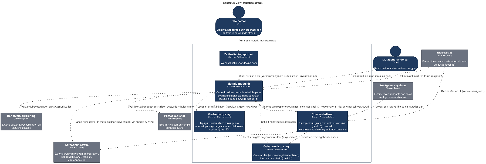

De aanleiding en dreigingsmodellering
⏱ 20 minNa deel 15 heeft het platform drie eigenschappen die elk een securitygevolg hebben dat niemand heeft doordacht: er draaien meer plaatsen — de conversiedienst is afgesplitst, er zijn meerdere instanties, er is gedeelde opslag voor bijlagen, elk daarvan is een toegangspunt; er is een geautomatiseerde uitrolstraat — wie de straat beheerst, beheerst het systeem zonder ooit productie aan te raken; en er zijn waarneembaarheidsgegevens — logging en tracering bevatten precies wat een aanvaller wil weten.
"Dat een medewerker het adres van een deelnemer wijzigt naar zijn eigen adres en vervolgens zelf de uitkeringsopdracht goedkeurt." Die zorg is in deel 6 en 8 benoemd als functiescheiding en als domeinregel. Vandaag bouwen we hem.
Dreigingsmodellering
Dreigingsmodellering is het systematisch doorlopen van een architectuurbeeld met de vraag: wat kan hier misgaan door toedoen van iemand die dat wil? Het is geen beveiligingsonderzoek en het vraagt geen aanvalskennis. Het vraagt uw architectuurbeeld, een gestructureerde vragenlijst en twee uur met de juiste mensen.
De opzet: neem een beeld — C4-niveau 2 of 3 uit deel 7, met de gegevensstromen erin; teken de vertrouwensgrenzen; loop elk element en elke stroom langs met een categorieënlijst; noteer wat u vindt, met een inschatting van waarschijnlijkheid en gevolg; prioriteer en wijs eigenaren toe — anders is het een gesprek en geen model.

| Categorie | De vraag |
|---|---|
| Identiteitsmisbruik | Kan iemand zich voordoen als een ander? |
| Manipulatie | Kan iemand gegevens wijzigen die hij niet mag wijzigen? |
| Ontkenning | Kan iemand achteraf ontkennen dat hij iets deed? |
| Informatielekkage | Kan iemand gegevens zien die hij niet mag zien? |
| Verstoring | Kan iemand de dienst onbruikbaar maken? |
| Rechtenverhoging | Kan iemand meer rechten krijgen dan toegekend? |
Voor Mutatie 2.0 levert dit vier zware bevindingen op: kan een behandelaar achteraf ontkennen dat zij een mutatie goedkeurde (QS-4 van de andere kant bekeken); kan een medewerker met mutatierechten zichzelf goedkeuringsrechten geven (de zorg van de security officer); staan er persoonsgegevens in tracering die de brede beheergroep kan lezen; en kan iemand code in productie krijgen zonder review.
De belangrijkste eigenschap van deze werkvorm is dat zij architectuurgericht is. Zij levert geen lijst van kwetsbaarheden in code op — daar zijn andere middelen voor — maar een lijst van plekken waar uw ontwerp een aanname doet over vertrouwen die niet is afgedwongen.
Uit Werkboek deel 16, Opdracht 16.2 — dreigingsmodelleringssessie